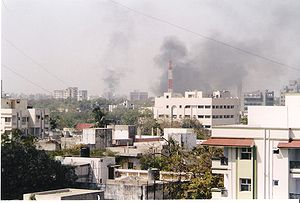

Naroda Patiya massacre
Coordinates: 23°05′N 72°40′E / 23.083°N 72.667°E

| Naroda Patiya massacre | |||
|---|---|---|---|
| Part of 2002 Gujarat riots | |||
|  | |||
| Date | 28 February 2002 | ||
| Location | Naroda, India 23°05′N 72°40′E / 23.083°N 72.667°E | ||
| Methods | Killing, hacking, looting, stabbing, sexual assault, gang-rape and burning people | ||
| Number | |||
| |||
| Casualties and accused | |||
| |||
{kind=link}
The Naroda Patiya massacre[b] took place on 28 February 2002 at Naroda,[c] in Ahmedabad, India, during the 2002 Gujarat riots. 97 Muslims were killed by a mob of approximately 5,000 people, organised by the Bajrang Dal, a wing of the Vishva Hindu Parishad, and supported by the Bharatiya Janata Party which was in power in the Gujarat State Government.[d] The massacre at Naroda occurred during the bandh (strike) called by Vishwa Hindu Parishad a day after the Godhra train burning.[e] The riot lasted over 10 hours, during which the mob looted, stabbed, sexually assaulted, gang-raped and burnt people individually and in groups. After the conflict, a curfew was imposed in the state and army troops were called in to contain further violence.
The communal violence at Naroda was deemed "the largest single case of mass murder" during the 2002 Gujarat riots; it accounted for the greatest number of deaths during a single event. Survivors faced socio-economic problems; many were left homeless, orphaned and injured. A number of shrines were destroyed and many schools were adversely affected, cancelled exams or closed entirely. The surviving victims were given shelter in relief camps provided by both the state and central government, and efforts were begun to restore destroyed properties and shrines. The state government formed a "Gujarat state commission of inquiry" for citizens to have a forum in which to make recommendations and suggest reforms. Mainstream media criticised the Gujarat government's handling of the riots; it was remarked that a number of reports were exaggerated, and "inflammatory headlines, stories and pictures" were published, resulting in anti-Muslim prejudice among the Hindu readership.
Allegations were made against the state police, state government and the chief minister Narendra Modi, citing that government authorities were involved and various police personnel played a role in the massacre: a number of eyewitnesses reported police officers favouring the mob by allegedly injuring or killing Muslims and damaging public and private property. All allegations were proved to be false and the government and police were cleared of wrongdoing by a Special Investigation Team. The initial report on the case was filed by the Gujarat police, accusing 46 people, all of whom the Special Court deemed unreliable. In 2008, the Supreme Court of India formed a Special Investigation Team to investigate the case. In 2009, the team submitted its report, which accused 70 people of wrongdoing, 61 of whom were charged.[f] On 29 August 2012, the Special Court convicted 32 people and acquitted 29 due to insufficient evidence. Among those convicted were Maya Kodnani – former Cabinet Minister for Women and Child Development of Gujarat and former Bharatiya Janata Party MLA from Naroda – who was sentenced to 28 years imprisonment, and Bajrang Dal's Babu Bajrangi, who received a life sentence.
| Part of a series on |
| Violence against Muslims in India |
|---|
| Incidents |
| Related topics |
Contents
- 1 Background
- 2 The massacre
- 3 Aftermath
- 4 Response by the government of Gujarat
- 5 Role played by media
- 6 Attacks against women
- 7 Alleged involvement of police and SRP in the massacre
- 8 Allegations against the state government and Narendra Modi
- 9 Investigations
- 10 Trial
- 11 See also
- 12 Notes
- 13 External links
- 14 Citation
- 15 References
- 16 Further reading
- 17 External links
Background[edit]
On 27 February 2002, the Godhra train burning incident initiated a series of riots in Gujarat. Hindu pilgrims returning from Ayodhya on the Sabarmati Express train were attacked and the train, which had stopped at Godhra station, was set on fire causing the death of 58 Hindus including 25 women and 15 children – activists of Vishva Hindu Parishad and Kar Sevaks.[1][2][3] Following the attack, false rumours were spread by a senior Vishwa Hindu Parishad leader that Muslims had kidnapped three Hindu girls during the incident.[4] Retaliatory attacks on Muslims began the same evening; a number of incidents in which Muslims were attacked and killed were reported in various cities in Gujarat before the Naroda incident.[5][6] The first attacks on the Muslim community occurred at Ahmedabad, where Hindu mobs began throwing stones and later burnt Gulbarg Society, a Muslim housing complex.[4] The initial violence was believed to be instigated by the unsubstantiated rumours about Muslims kidnapping three Hindu girls.[4] Violence spread to the largely rural districts of Panchmahal, Mehsana, Kheda, Junagadh, Banaskantha, Patan, Anand and Narmada the next day.[7]
The massacre[edit]
At the time of the riots Naroda Patiya and Naroda Gam – a suburb 1 kilometre (0.62 mi) from Naroda Patiya; both of which constitute the municipality of Naroda – located in Gujarat's largest city, Ahmedabad,[8][9][10] had around 2,000 daily wage-earning Muslim inhabitants, and many immigrants from Karnataka and Maharashtra.[11][12] On the evening of 27 February 2002, Vishwa Hindu Parishad declared a statewide strike in response to the Godhra train burning incident, starting from 28 February.[13] On the first day of the strike, a mob of approximately 5,000 people, allegedly led by the Bharatiya Janata Party and the Bajrang Dal, attacked and attempted to burn the entire Muslim community of Naroda Patiya.[13] The rioting began at 9 am when the Noorani Mosque was destroyed by exploding liquified petroleum gas (LPG) cylinders.[6][14]
Cases of hacking, looting, stabbing and sexual assaults including public gang-rapes in which the victims were burnt, were reported.[15][6] Many people were burnt alive, individually or in groups by "chasing them into huge pits" and setting fire to them using LPG cylinders.[14] Burnt bodies were also thrown in a dry well.[6][15][13] Women and girls were sexually assaulted, raped and killed by burning or by stabbing.[13] Maya Kodnani, Babu Bajrangi and a few others supplied weapons to the crowd, and Suresh Chara and others raped and killed women.[16][17] LPG cylinders were used to destroy a number of buildings in the residential and working areas.[14] The massacre lasted for over 10 hours and finally a curfew was imposed in 27 towns and cities across Gujarat.[18]
Most of the homes of Muslims in Naroda were burnt while Hindu homes remained undamaged.[6] As the riots ended, it was estimated that around 125 people had been killed in the violence.[19][20] After the rioting, 94 bodies were recovered; three more people were reported missing and were later declared dead.[13] More than 30 people were found injured.[6][12][13] The dead – all Muslims – [21]comprised 36 women, 35 children and 26 men.[22] The incident is considered to be the "most gruesome of all post-Godhra violent incidents" and "the largest single case of mass murders", and claimed the highest number of lives of all the events during the Gujarat riots.[13][23][24]
Aftermath[edit]
By the evening of 28 February, a curfew was imposed in 27 towns and cities of the state in an attempt to curb the violence.[18] Over the next two days, Bharuch, Rajkot and later Surat were hit.[7] Approximately 151 towns and 993 villages in 16 of the state's 25 districts were affected by the post-Godhra violence, which was particularly severe in six districts.[25] The violence raged heavily between 28 February and 3 March 2002, slowed briefly, then restarted on 15 March and continued until mid-June.[26] Northern and central Gujarat and the north-eastern tribal belt – which are closer to Godhra City – were the worst affected while Saurashtra and Kutch remained relatively peaceful.[25] 1,000 army troops were flown in by the evening of 1 March to restore order. Intelligence officials alleged that the state government deliberately delayed the deployment.[27] On 3 May, former Punjab police chief Kanwar Pal Singh Gill was appointed as security adviser to Modi.[27] The Gujarat government transferred several senior police officers, who had taken steps to contain and investigate violent attacks, to administrative positions.[28][29][30]
According to an official estimate, 1,044 people were killed during the 2002 Gujarat riots – 790 Muslims and 254 Hindus. Another 223 people were reported missing, 2,548 were injured, 919 women were widowed and 606 children were orphaned.[31][32][33] When people missing after the riots were declared dead after seven years, total deaths rose from 1,044 to 1,267[34][35] Unofficial estimates put the death toll closer to 5,000, with Muslims forming the majority.[36][37] Police records say that 298 dargahs, 205 mosques, 17 temples and three churches were damaged during the riots.[38]
Opposition parties and three coalition partners of the Bharatiya Janata Party-led central government demanded the dismissal of Gujarat chief minister Narendra Modi for failing to contain the violence, with some calling for the removal of Union Home Minister L. K. Advani as well.[39] On 18 July 2002, Modi asked the governor of Gujarat, Sunder Singh Bhandari, to dissolve the state assembly and call fresh elections.[40] The Indian Election Commission ruled out early elections, citing the prevailing law and order situation, a decision the union government unsuccessfully appealed against in the Supreme Court.[41][42] Elections were held in December and Modi returned to power.[43]
Rehabilitation of victims[edit]
Residents left homeless by the massacre were given shelter in relief camps constructed by the state government.[6] On 16 March 2002, the state government formed an all-party committee consisting of 13 member and chaired by Bhandari to provide relief and rehabilitation to the victims of the riots.[6][44] Modi proposed to close the camps by the end of March but later decided not to close them.[6][45] Under pressure from the opposition party, the Indian National Congress, the all-party committee reached a consensus to implement rehabilitation measures suggested by various non-governmental organisations which were to aid people to build houses.[6][46]
Effects on children and education[edit]
A number of children were killed, injured or orphaned by the violence.[6][47][48][22] Organisations such as Citizens' Initiative reported that the violence resulted in the disturbance of children's studies and that there was a lack of counselling.[47] Students at Gujarat University were unable to take examinations, which were cancelled due to the chances of disruption. While other schools in the state had to postpone or cancel exams, it was reported that some schools held examinations under police protection.[49] It was also reported that many students were forced to leave their studies due to lack of funds or to earn a livelihood because they had lost income-earning members of their families.[48]
Restoration of shrines[edit]
A number of darghas, including a 500-year-old heritage masjid in Isanpur, and many mosques in Naroda were destroyed in the rioting.[50][6] In 2003, a petition was filed in Gujarat High Court by advocate Yusuf Muchhala on behalf of the Islamic Relief Committee, asking the court to direct the state to restore the religious shrines destroyed during the violence.[51] In response to the petition, the Gujarat government stated that, "as a secular state, they cannot aid any community to re-build shrines".[6][52] On 8 February 2012, the High Court directed the state government to rebuild the shrines, and said it was the state's "constitutional responsibility to restore the shrines".[53] The matter went to the Supreme Court, which refused to stay the order.[54]
Response by the government of Gujarat[edit]
The state government stated that the massacre was "a spontaneous reaction to the Godhra train carnage and the state government and ruling party had nothing to do with it".[55] On 1 March 2002, Modi, talking about the violence, said that he tried everything to control the "riots resulting from the natural and justified anger of people",[6][56] ".[6][57] Referring to the massacre, Modi said, "The five crore (50 million) people of Gujarat have shown remarkable restraint under grave provocation".[6]
The state government appointed a "Gujarat state commission of inquiry" to investigate the case and give recommendations. The committee was chaired by retired Gujarat High Court judge K.G. Shah. The formation of the committee raised concerns about delays in implementing recommendations because two similar reports about reforms, by the Reddy and Dave commissions, had been pending implementation since 1969 and 1985 respectively.[58] The government of Gujarat presented its report to National Human Rights Commission of India, justifying its role and stating its findings about the massacre.[6][59] The state government's report did not mention the involvement of Vishwa Hindu Parishad and Bajrang Dal activists, despite statements by numerous eyewitnesses. The report also included, according to Human Rights Watch, a "grossly under-counted" total of the shrines destroyed in the violence.[6][53]
Role played by media[edit]
Television and newspaper reports, particularly local Gujarati-language media, carried graphic and at times sensationalised images and accounts of the Godhra train fire and Naroda Patiya massacre.[60] This was the first major communal violence after the advent of satellite television in India. Television news channels identified the community of those involved in the violence, breaking a long-standing practice and setting a precedent.[61] Critical reporting on the Gujarat government's handling of the situation helped bring about the Indian government's intervention in controlling the violence.[61] The Gujarat government banned television news channels that were critical of its response; STAR News, Zee News, Aaj Tak, CNN and local stations were blocked.[61] The Editorial Guild of India rejected the charge that graphic news coverage aggravated the situation, saying that the coverage exposed the horrors of the riots and the "supine if not complicit" attitude of the state, helping propel remedial action. The team also faulted Gujarati-language newspapers Gujarat Samachar and the pro-Hindutva Sandesh for distorted and provocative reporting.[61] Rather than Naroda Patiya, the Godhra train fire was extensively covered until the subsequent violence and the presentation of the Union budget overtook it.[61]
Modi said that the media had exaggerated while covering the extent of violence and criticised the media for "provoking the violence by naming the religion of victims".[6][62] Newspapers, particularly Sandesh, were reported by various organisations to have published "inflammatory headlines, stories and pictures".[6][63] A headline in Sandesh on 28 February 2002 read, "Avenge Blood With Blood".[64] After the massacre, when Muslims had returned from Hajj, Sandesh had published the headline, "Hindus Beware: Hajj pilgrims return with deadly conspiracy", which caused terror among the returning Muslim community, and they were escorted by Army officials to their homes and were given protection to avoid attacks.[6][63][65] A report by the People's Union for Civil Liberties stated, "Major effect of media under long period has been to feed on the prevalent anti-Muslim prejudices of its Hindu readership and provoke it further by sensationalizing, twisting, mangling and distorting news or what passes for it."[6][63]
In its 2007 expose The Truth: Gujarat 2002 - Tehelka report, the political weekly Tehelka released hidden camera footage of several members of the Bharatiya Janata Party, Vishwa Hindu Parishad and the Bajrang Dal admitting their role in the riots.[66][67] While the report was criticised for being politically motivated,[68][69][70] some newspapers said the revelations simply reinforced what was common knowledge.[67][71][72] Several inaccuracies in the statements cast doubt on the sting operation. Bajrangi and Suresh Richard said that Narendra Modi visited Naroda Patiya a day after the massacre to thank them, but the official record shows that Modi did not visit Naroda Patiya. The Gujarat government blocked cable news channels from broadcasting the expose, an action which was criticised by the Editors Guild of India.[73]
Attacks against women[edit]
A number of women and girls were raped, sexually assaulted and killed during the incident. Reports presented by Citizen's Initiative, and Human Rights Watch stated that out of the 36 women killed in the Naroda Patiya massacre, most were sexually assaulted before their deaths; surviving women also reported being assaulted.[6][47] According to Human Rights Watch, women and girls were "brutally raped before being killed".[6] Most of the rapes took place in public, and the victims were then killed and their bodies burnt.[6][47][74] Among the women surviving in the relief camp, many suffered forms of sexual violence – including rape, gang rape, mass rape, stripping, insertion of objects into their bodies and molestation. Citizens' initiative's report stated that "A majority of rape victims have been burnt alive. There is evidence of State and Police complicity in perpetuating crimes against women. No effort was made to protect women. No Mahila women police was deployed. State and Police complicity is continuing as, women survivors continue to be denied the right to file FIRs. There is no existing institutional mechanism in Gujarat through which women can seek justice".[47]
According to Human Rights Watch, the abdomens of three pregnant women were cut open and the foetus removed and thrown into a fire.[6][75] In an incident that came to light in 2007, Suresh Dedawala (Richard) alias Langado was caught on camera in a Tehelka sting operation talking to Bajarangi about slitting the belly of pregnant Muslim Kausar Banu, removing her foetus and killing it with a sword.[17][15]
Alleged involvement of police and SRP in the massacre[edit]
It was alleged that the police helped the mob against the Muslim community on the day of massacre. Evidence included complaints filed by victims' family members which state that police officials fired bullets and helped the mob, resulting in the killings.[76] It was also alleged that police guided the mob of rioters to residents' hiding places.[6][76] According to Human Rights Watch, the police did nothing as houses and people were burnt and, on the day of the violence, did not respond to telephone calls until the massacre ended.[6] Numerous eyewitnesses saw police aiming tear gas shells at, and firing upon, Muslim youths who tried to defend themselves or others.[75][47] There also have been allegations that police themselves burnt houses and looted.[6][75][47] In the violence, the extensive use of liquefied petroleum gas (LPG) was reported, which was cited as evidence of the involvement of officials because of easy access to it.[6][14][77]
A report based on eyewitness statements submitted by the Citizens' Initiative to the National Human Rights Commission of India states that the State Reserve Police (SRP), a force of specially trained emergency police, were seen chasing the victims and helping the rioters rather than calming the situation.[78] According to Human Rights Watch, some victims said that they were able to handle the crowd but when police and SRP joined in, it became difficult as the police sided with the rioters and fired on Muslim residents.[6][14] The state government denied these allegations; Modi said that police fired to "contain outbreaks of violence" and added that they had "mowed down people to quell the violence".[6][79] The Special Investigation Team also defended the role played by officials and said that everything was done to stop the violence.[80][81]
Allegations against the state government and Narendra Modi[edit]
Human Rights Watch and other Indian human rights groups alleged that the Gujarat government authorities and police helped the mob on the day of violence in Naroda.[6][82][83][84][85] Human Rights Watch found evidence that the state government helped the mob in the attacks because action by police and other officials was delayed and "less effective".[6][86] A Bharatiya Janata Party insider alleged to Human Rights Watch that Narendra Modi and state government were involved in the riots, stating; "Insiders in the Bharatiya Janta Party admit that the police were under instructions of Narendra Modi administration not to act firmly".[6] Celia Dugger of the New York Times reported that witnesses were "dismayed by the lack of intervention from local police", who often "watched the events taking place and took no action against the attacks on Muslims and their property".[87]
Babu Bajrangi, the Bajrang Dal leader that was one of the main organisers of the massacre, has stated that he called the State's Home minister Gordhan Zadaphia at the end of the day and told him everything that had happened. Zadaphia is said to have advised him to leave the State and go into hiding. He also stated that a State Reserve Police officer that made a statement against him was promoted by Narendra Modi, which "silenced him."[88] Maya Kodnani, a BJP legislator described as the "kingpin of the violence" by Judge Yagnik, was later appointed as a Minister for Women and Child Welfare in Narendra Modi's government. Cell phone records showed that she was in touch with the Chief Minister's Office, the Home Minister as well as top police officials during the massacres.[89] The Chief Minister's office was also in touch with other rioters Tanmay Mehta, Sanjay Bhavsar and Anil Mukim.[90]
Modi and the state government denied any involvement in the riots.[91] On 10 April 2012, the Special Investigation Team cleared Modi and the government in the riot cases, stating that, "Law and order review meetings were held by Modi and all the things was done to control the situation ... the Army was called on time to contain the communal violence. Modi was busy with steps to control the situation, establishment of relief camps for riot victims and also with efforts to restore peace and normalcy."[81][80]
An affidavit was filed in the Supreme Court on the basis of a report on testimony of suspended IPS officer Sanjiv Bhatt that Modi ordered top police officers not to take active actions in the riots.[81] Bhatt said that on the night of 27 February 2002, Modi said that "Hindus must be allowed to carry out retaliatory violence against Muslims." The report filed by Raju Ramachandran, a Supreme Court lawyer and an amicus curiae, alleged that Modi "gave instructions to top police officers to go slow on rioters". On 7 May 2012, Ramachandran said that Modi can be prosecuted under sections 153 A (1) (a) & (b), 153 B (1), 166 and 505 (2) of the Indian Penal Code for promoting enmity among different groups during the 2002 Gujarat riots, including the Naroda incident.[92] The Special Investigation Team criticised the amicus report for relying heavily on Bhatt's testimony, who according to the Special Investigation Team (SIT) was an "unreliable witness" as he remained silent for nine years. The report was rejected by the team and according to the SIT, "No case can be made out against Gujarat Chief Minister Narendra Modi in connection with the 2002 communal riots under any of the Sections of the Indian Penal Code mentioned by him [Ramachandran]".[93]
Investigations[edit]
Initial investigation[edit]
As the investigations began, some victims reported that the Gujarat Police "didn't cooperate well" and declined to lodge a First Information Report against some people. Later the police filed all complaints and presented their first report.[6] The police accused and arrested 46 persons in the case;[94] however, the investigation was criticised by the special court and was considered "unreliable as the investigator's propriety in recording the statements had itself been rebutted."[95]
Special Investigation Team report[edit]
In 2008, the Supreme Court of India directed that the case be transferred from police investigation to a committee appointed by the court, the Special Investigation Team, because the police had become one of the riot cases. The team was led by ex-Central Bureau of Investigation director R. K. Raghavan, and the case was the sixth Gujarat riots case assigned to them for investigation.[94] Taking into account the findings about telephone records of various activists, Kodnani and other major leaders were included in the report for the first time.[53] The Special Investigation Team's findings added 24 more names to the 46 people arrested by the police. Before the trial began, 6 of the accused died.[94] In 2009 the trial started, during which three of the accused died, thus the final report covered 61 people.[94]
The report said that Kodnani, Bajrangi and other leaders had led violence as well as "instigating the mob".[96] Kodnani's telephone records revealed that she had made calls to the Chief Minister's Office (CMO) on the day of the massacre and that her telephone was located at places where the violence occurred. She had also contacted numerous police officials, especially K.K. Mysorewala, the police inspector in charge of Naroda at the time of the massacre. Her logs also revealed that she had received calls from the CMO and other police officers, the reasons for which are unknown.[97]
Trial[edit]
The court examined 327 witnesses, including eyewitnesses, victims, doctors, police personnel, government officials, and forensic experts.[94] The special public case was prosecuted by Akhil Desai and Gaurang Vyas.[94]
The judgement[edit]
The first verdict in the trial case was handed down on 29 August 2012 by Judge Jyotsna Yagnik. The special trial court convicted Maya Kodnani, the sitting Bharatiya Janata Party MLA from Naroda and former Minister for Women and Child Development of Gujarat,[96] and Bajrang Dal politician Babu Bajrangi under Indian Penal Code Section 120 B (criminal conspiracy) and 302 (murder). It also convicted 30 other people of murder, criminal conspiracy and other criminal charges, and acquitted 29 accused, giving them the benefit of the doubt as there was lack of evidence against them.[98][24] Kodnai was the first woman, MLA and minister to be convicted in the Gujarat riot case.[99] Suresh Dedawala (Richard) alias Langado and accomplices were convicted of rape and murder along with accomplices.[17][15]
The prosecution requested the death penalty for all the convicts.[100] Sentencing took place on 31 August: Kodani was given a 28-year prison term, and received two sentences; the first for 10 years under Indian Penal Code Section 326 (voluntarily causing grievous hurt by dangerous weapons or means) and the second for 18 years under Section 302 (murder) and others. Her sentences are set to run consecutively, making a total of 28 years. Bajrangi received life imprisonment. Of the rest of the 30 convicted, 22 were sentenced to a minimum of 14 years and 7 to a minimum of 21 years in prison; they included Naresh Chara, Morli Sindhi, Haresh Rathod, Suresh Langado, Premchand Tiwari, Manojbhai Sindhi Kukrani and Bipin Panchal. One of the convicted, Suresh alias Shahjad Nekalkar, absconded and his sentencing was deferred.[13][101][102]
The original case in the Trial court had 61 accused. In August 2012, the special SIT court in its judgement found 32 guilty and acquitted 29. The accused appealed Gujarat High court. On 20 April 2018 judgment on the appeals, the High court convicted 16 persons, including Babu Bajrangi. High Court acquitted 18 others including former BJP Minister Maya Kodnani, who was tried as the main accused by the trial court. Out of 13 of these convicts, three were sentenced to 10 years rigorous imprisonment, nine were handed 21 years of rigorous imprisonment and one was sentenced to 10 years in jail.[103]
Comments about Kodnani and the initial investigation[edit]
Kodnani said that she had never been to Naroda and had become a "victim of politics".[104] Judge Yagnik described her as the "kingpin of the violence",[104][105][106] and as the 37 months of trials ended, the court said in a statement that Kodnani had received help from the state government, and efforts had been made to avoid her name appearing on the list of accused.[104][105][106] The statement said, "Kodnani was tremendously favoured by the then investigating agencies (before the Supreme Court-appointed Special Investigation Team took over). All care, at the cost of the duty of the investigating officer and even the interest of the victims, was taken to see to it that Kodnani's involvement does not come on the books. This, in fact, comes in the way to believe that Kodnani was ever a victim of any politics."[104][105][106]
In the verdict, the special court criticised the initial investigation and the police for "not doing any policing during the 2002 riots and then deliberately conducting poor investigations."[107] The verdict said that statements of witnesses recorded by the Gujarat police were "unreliable as the investigator's propriety in recording the statements had itself been rebutted."[107][95] The special court judge also criticised Mysorewala's actions in investigation, and said that "Mysorewala and his force were totally inactive on all fronts and in every aspect."[107] The court added that: "No doubt, it was an elephantine task to investigate the kind of crimes, but then it cannot be believed that the senior Investigating Officers, having experience, do not know what should be the priorities in such kind of investigation. But, it seems that they must have been over-shadowed by some element"[107]
Responses to verdict[edit]
Residents in the city, including the victims, appreciated the judgement and celebrated.[108][109] Digvijay Singh of the Indian National Indian National Congress welcomed the verdict and statement of Modi's role in the riots and said, "Now it is proved that ministers and officials of BJP were involved in Gujarat riots and all this happened under the guidance of Modi ... can any minister (take part in riots) do this without the support of the Chief Minister?"[110] The president of the Gujarat Pradesh Congress Committee, Arjun Modhwadia, said on Twitter: "Naroda Patiya: justice delayed not denied. thousands behind the bars, more awaiting. but will the law be able to touch the 'beneficiary'?"[111] Modi, in response to the sentencing of Kodnani – who was a minister in his cabinet – refused to apologise. Modi said his government had played no role in the riots,[91] and that, "If Modi has sinned, then Modi should be hanged. But even after trying sincerely to save many lives, some people want to bad-mouth me due to political reasons, then I can't answer them."[112] Jaynarayan Vyas, spokesman for the cabinet of the Gujarat government, said that it was not involved and was not responsible for the actions of Kodnani: "Ms. Kodnani, a practising gynaecologist, was not a Minister at the time of the massacre and was only an MLA, and her individual action could not be construed as a 'cumulative responsibility of the Cabinet'."[13]
See also[edit]
Notes[edit]
- Jump up ^ The image is not of Naroda Patiya, however, it is kept for illustrative purpose since similar incidents were reported in the massacre.
- Jump up ^ Since most of the killings were done in Naroda Patiya, the incident was termed Naroda Patiya massacre instead of Naroda massacre.
- Jump up ^ The town Naroda consists of Naroda Patiya and Naroda Gaon, located 1 km away from each other.
- Jump up ^ Human Rights Watch & 2002 a, Tehelka & 2007 b, Tehelka & 2007 c, Indian Express & 2007 a, The Hindu & 2012 a, Hindustan Times & 2012 e
- Jump up ^ The Godhra train burning incident was considered one of the root causes for the riots that began from 28 February. Thus the following incidents were collectively termed to be a part of "post-Godhra riots"
- Jump up ^ Six of the accused died before the trials and three others died during trials.
External links[edit]
- Report By The Commission of Inquiry Consisting of Mr. Justice G.T. Nanavati And Mr. Justice Akshay H. Mehta
- Detailed Report on the Godhra riots by the Concerned Citizens Tribunal
Citation[edit]
- Jump up ^ Allan D. Cooper 2009, pp. 183–84.
- Jump up ^ BBC 2011.
- Jump up ^ The Times of India 2011.
- ^ Jump up to: a b c New York Times & 2002 a.
- Jump up ^ Hindustan Times 2002.
- ^ Jump up to: a b c d e f g h i j k l m n o p q r s t u v w x y z aa ab ac ad ae af ag ah ai aj Human Rights Watch & 2002 a.
- ^ Jump up to: a b Christophe Jaffrelot 2003.
- Jump up ^ World Gazetteer 2010.
- Jump up ^ Government of India 2011.
- Jump up ^ Census of India 2011.
- Jump up ^ Hindustan Times & 2012 a.
- ^ Jump up to: a b Tehelka & 2007 a.
- ^ Jump up to: a b c d e f g h i The Hindu & 2012 a.
- ^ Jump up to: a b c d e Human Rights Watch 2003, pp. 16–29.
- ^ Jump up to: a b c d India Today 2012.
- Jump up ^ India Today 2009.
- ^ Jump up to: a b c The Times of India & 2012 a.
- ^ Jump up to: a b Asgharali Engineer 2002, p. 120.
- Jump up ^ DNA India & 2012 a.
- Jump up ^ Parvis Ghassem-Fachand 2012, p. 114.
- Jump up ^ Pakistan Observer 2012.
- ^ Jump up to: a b Business Standard 2012.
- Jump up ^ Yahoo lifestyle India 2012.
- ^ Jump up to: a b CNN-IBN & 2012 a.
- ^ Jump up to: a b T K Oommen 2005, p. 120.
- Jump up ^ University of Washington Press 2005, pp. 385–393.
- ^ Jump up to: a b London: The Telegraph 2002.
- Jump up ^ New York Times & 2002 b.
- Jump up ^ Times of India & 2002 a.
- Jump up ^ The Asian Age & 2002 a.
- Jump up ^ BBC & 2005 a.
- Jump up ^ ExpressIndia 2005.
- Jump up ^ Indiainfo.com 2005.
- Jump up ^ The Times of India & 2009 a.
- Jump up ^ The Times of India & 2009 b.
- Jump up ^ Human Rights Watch & 2002 b.
- Jump up ^ The Times of India 2005.
- Jump up ^ The Times of India & 2002 b.
- Jump up ^ The Hindu & 2002 a.
- Jump up ^ BBC 2002.
- Jump up ^ CNN 2002.
- Jump up ^ New York Times & 2002 c.
- Jump up ^ BBC & 2005 b.
- Jump up ^ Press Trust of India & 2002 a.
- Jump up ^ The Hindu & 2012 b.
- Jump up ^ The Hindu & 2002 b.
- ^ Jump up to: a b c d e f g Citizens' Initiative & 2002 a.
- ^ Jump up to: a b Associated Press & 2002 a.
- Jump up ^ The Times of India & 2002 c.
- Jump up ^ Surat Mirror 2012, pp. 4–5.
- Jump up ^ Mumbai Mirror 2012, pp. 4–5.
- Jump up ^ Pune Mirror 2012, pp. 4–5.
- ^ Jump up to: a b c Ahmedabad Mirror 2012, pp. 4–5.
- Jump up ^ The Times of India & 2012 f.
- Jump up ^ Hindustan Times & 2012 b.
- Jump up ^ The Asian Age & 2002 b.
- Jump up ^ Baldauf, Scott & Christian Science Monitor 2002.
- Jump up ^ The Times of India & 2002 d.
- Jump up ^ The Hindu.
- Jump up ^ The Hindu & 2002 c.
- ^ Jump up to: a b c d e Sonwalkar, Prasun 2006.
- Jump up ^ Associated Press & 2002 b.
- ^ Jump up to: a b c People's Union Civil Liberties 2002.
- Jump up ^ Sandesh & 2002 a.
- Jump up ^ Sandesh & 2002 b.
- Jump up ^ Tehelka & 2007 b.
- ^ Jump up to: a b Indian Express & 2007 a.
- Jump up ^ The Hindu 2009.
- Jump up ^ Outlook India 2007.
- Jump up ^ Asian Tribune 2007.
- Jump up ^ Times of India 2007.
- Jump up ^ Indian Express & 2007 b.
- Jump up ^ The Hindu 2007.
- Jump up ^ Peoples' Union Civil Liberties 2002.
- ^ Jump up to: a b c Human Rights Watch & Interview 2012.
- ^ Jump up to: a b The Week.
- Jump up ^ SAHMAT 2012.
- Jump up ^ Citizens' Initiative & 2002 b.
- Jump up ^ Press Trust of India & 2002 b.
- ^ Jump up to: a b The Times of India & 2012 c.
- ^ Jump up to: a b c The Economic Times 2012.
- Jump up ^ University of Michigan 2007, pp. 24–33.
- Jump up ^ Ramesh N. Rao & Koenraad Elst 2003, p. 189.
- Jump up ^ Steven Wilkinson 2005, p. 119.
- Jump up ^ Harsh Dobhal, p. 36.
- Jump up ^ Human Rights Watch & 2002 c.
- Jump up ^ New York Times & 2002 d.
- Jump up ^ Tehelka & 2007 c.
- Jump up ^ Hindustan Times & 2012 e.
- Jump up ^ Aakar Patel 2012.
- ^ Jump up to: a b The Washington Post 2012.
- Jump up ^ The Hindu & 2012 c.
- Jump up ^ The Hindu & 2012 d.
- ^ Jump up to: a b c d e f DNA India & 2012 b.
- ^ Jump up to: a b DNA India & 2012 c.
- ^ Jump up to: a b Economic times of India 2009.
- Jump up ^ Hindustan Times & 2012 c.
- Jump up ^ Hindustan Times & 2012 r.
- Jump up ^ Zee news & 2012 a.
- Jump up ^ NDTV 2012.
- Jump up ^ CNN-IBN & 2012 b.
- Jump up ^ The Times of India & 2012 e.
- Jump up ^ "Gujarat HC awards 10-year jail term to three convicts in Naroda Patiya massacre case". The Hindu. 25 June 2018. Retrieved 25 June 2018.
- ^ Jump up to: a b c d The Times of India & 2012 g.
- ^ Jump up to: a b c Rediff news 2012.
- ^ Jump up to: a b c Indian Express 2012.
- ^ Jump up to: a b c d The Times of India & 2012 d.
- Jump up ^ Pune Mirror 2012.
- Jump up ^ Hindustan Times & 2012 d.
- Jump up ^ Zee news & 2012 b.
- Jump up ^ Twitter 2012.
- Jump up ^ Blog post & The Washington Post 2012.
References[edit]
- Cooper, Allan D. (2009). The Geography of Genocide. Lanham, Maryland: University Press of America. pp. 183–84. ISBN 9780761840978.
- "India Godhra train blaze verdict: 31 convicted". BBC. 22 February 2011. Retrieved 14 September 2012.
- "Death for 11, life sentence for 20 in Godhra train burning case". The Times of India. 1 March 2011.
- Dugger, Celia W. (2 March 2002). "2000 Are Dead in 3-Day Riot of Revenge in West India". The New York Times.
- "Time Line". Hindustan Times.
- Fédération internationale des droits de l'homme (1999). India. Human Rights Watch. pp. 15–21. GGKEY:EQHFE690BBG. Retrieved 1 September 2012.
- Christophe Jaffrelot (July 2003). "Communal Riots in Gujarat: The State at Risk?" (PDF). Heidelberg Papers in South Asian and Comparative Politics. South Asia Institute, University of Heidelberg (17). Retrieved 4 February 2011.
- "India: metropolitan areas". World Gazetteer. Archived from the original on 8 October 2010. Retrieved 16 September 2012.
- Government of India. "Provisional population totals" (PDF). 2011 census of India. Retrieved 16 September 2012.
- "Population Finder". Census of India. Retrieved 16 September 2012.
- "On judgement day, Modi's close MLA sent to jail for Gujarat riots". Hindustan Times. 29 August 2012.
- "'Muslims, They Don't Deserve To Live'". Tehelka. 3 November 2007.
- Dasgupta, Manas (29 August 2012). "Ex-BJP Minister among 32 convicted of Naroda-Patiya massacre". The Hindu. Chennai, India. Archived from the original on 15 September 2012. Retrieved 30 August 2012.
- Fédération internationale des droits de l'homme (FIDH) (July 2003). "Naroda Patia case". Human Rights Watch, Vol. 15, No. 4 (C). Human Rights Watch. pp. 16–29. Retrieved 16 September 2012.
- "Naroda Patia convict Bajrangi takes pride in his action, says felt like Rana Pratap". India Today. 31 August 2012.
- "Maya gets bail". India Today. 19 May 2009. Retrieved 7 June 2012.
- "Naroda Patia case: Langado ran riot, then bragged". The Times of India. 31 August 2012. Retrieved 30 August 2012.
- Asgharali Engineer (1 January 2003). The Gujarat Carnage. Orient Longman. p. 120. ISBN 9788125024965. Retrieved 16 September 2012.
- "For Maya Kodnani, riots memories turn her smile into gloom". DNA India. 21 February 2012. Retrieved 7 June 2012.
- Ghassem-Fachandi, Parvis (19 March 2012). Pogrom in Gujarat: Hindu Nationalism and Anti-Muslim Violence in India. p. 114. ISBN 9780691151779. Retrieved 1 September 2012.
- "The fanatic Indian who killed 97 Muslims". Pakistan Observer. 31 August 2012. Retrieved 1 September 2012.
- "Naroda Patiya case: Kodnani, 30 others get life term". Business Standard. 1 September 2012. Retrieved 1 September 2012.
- "Naroda Patiya: Maya Kodnani jailed for 28 years, Babu Bajrangi gets death". Yahoo lifestyle India. Yahoo!. 31 August 2012. Retrieved 16 September 2012.
- "Naroda Patiya massacre: BJP MLA Maya Kodnani, Bajrang Dal leader Babu Bajrangi and 30 others convicted". CNN-IBN. 29 August 2012.
- T K Oommen (2005). "Crisis and Contention in Indian Society": 120.
- Paul R. Brass (2005). The Production of Hindu-muslim Violence in Contemporary India. University of Washington Press. pp. 385–393. ISBN 978-0-295-98506-0.
- Rahul Bedi (4 March 2002). "Soldiers 'held back to allow Hindus revenge'". The Telegraph. London. Retrieved 4 February 2011.
- "Gill is Modi's Security Adviser". The Tribune. India. 2 May 2002. Retrieved 4 February 2011.
- Celia W. Dugger (27 July 2002). "Religious Riots Loom Over Indian Politics". The New York Times. Retrieved 4 February 2011.
- Kingshuk Nag (29 April 2002). "Disquiet among Gujarat police". The Times of India. India. Retrieved 4 February 2011.
- "Modi Punishes good officers". Ahmedabad.com (Republished from The Asian Age). 26 March 2002. Archived from the original on 27 March 2008.
- "Gujarat riot death toll revealed". BBC News. 11 May 2005. Archived from the original on 26 February 2009.
- "BJP cites govt statistics to defend Modi". ExpressIndia. Press Trust of India. 12 May 2005. Archived from the original on 26 February 2009.
- "254 Hindus, 790 Muslims killed in post-Godhra riots". Indiainfo.com. Press Trust of India. 11 May 2005. Archived from the original on 26 February 2009.
- Khan, Saeed (1 March 2009). "Gujarat riot 'missing' declared dead". The Times of India. Retrieved 4 February 2011.
- Misra, Leena (16 February 2009). "Gujarat riots toll to go up from 952 to 1,180". The Times of India. Retrieved 4 February 2011.
- "We Have No Orders To Save You". Human Rights Watch. 30 April 2002. Retrieved 4 February 2011.
|chapter=ignored (help) - Fernandez, Percy (22 March 2005). "UK reads the riot act to Narendra Modi". The Times of India. Retrieved 4 February 2011.
- Sanjay Pandey (28 April 2002). "More fall prey to police firings in Gujarat". The Times of India. India. Retrieved 4 February 2011.
- "Removal of Advani, Modi sought". The Hindu. Chennai, India. 7 March 2002. Retrieved 4 February 2011.
- "Gujarat chief minister resigns". BBC News. 19 July 2002. Retrieved 4 February 2011.
- Mark Tully (27 August 2002). "India's electoral process in question". CNN. Retrieved 4 February 2011.
- Amy Waldman (7 September 2002). "2 Indian Elections Bring Vote Panel's Chief to Fore". The New York Times. Retrieved 4 February 2011.
- "Gujarat victory heartens nationalists". BBC News. 15 December 2002. Retrieved 4 February 2011.
- "Committee to oversee relief work in Gujarat". Press Trust of India.
- Dasgupta, Manas (24 March 2002). "Gujarat police top brass want a free hand". The Hindu. Chennai, India. Archived from the original on 11 September 2012. Retrieved 11 September 2012.
- Dasgupta, Manas. "No plans to close camps – Modi". The Hindu.
- "The Survivors Speak". Citizens' Initiative.
- Sanya, Rupak. "Unrecognizable bodies of Indian children go unclaimed". Associated Press.
- "Police to help conduct GU exams". The Times of India. 7 April 2002. Retrieved 11 September 2012.
- Gajjar, Bhadresh (17 September 2012). "No relief for riot-hit Muslim shrines". The Times of India. Ahmedabad. p. 2.
- Trivedi, Deepal (2 September 2012). "The Defenders". Ahmedabad Mirror. Ahmedabad. pp. 4–5.
- "The Justice league". Pune Mirror. Ahmedabad. 2 September 2012. pp. 4–5.
- "The Defenders". Mumbai Mirror. Ahmedabad. 2 September 2012. pp. 4–5.
- "The Defenders". Surat Mirror. Ahmedabad. 2 September 2012. pp. 4–5.
- Langa, Mahesh (29 August 2012). "Modi's ride to Delhi gets rougher after Naroda verdict". Hindustan Times. Retrieved 17 September 2012.
- "Gujarat used as Hinduvtva laboratory". Asian Age.
- Baldauf, Scott. "Indian Government struggles to maintain order". The Christian Science Monitor.
Godhra and post-godhra justifies violence as natural and spontaneous and there will be reaction to any action
- Pathak, Anil (4 March 2002). "Traditional hot-beds of strife remain relatively quiet". The Times of India. Retrieved 13 September 2012.
- Modya, Anjali (5 April 2002). "Gujarat report-whitewashing reality?". The Hindu. Chennai, India. Retrieved 12 September 2012.
The gory details of the Godhra incident, depicting charred bodies through the electronic media, aroused passions of the people of Gujarat on a very large scale. In the wake of the call for 'Gujarat bandh' and the possible fall-out of the Godhra incident, the State Government took all possible precautions. However, on account of widespread reporting in the media, incidents of violence on a large-scale started occurring in Ahmedabad, Baroda... Crowds that assembled in the towns were huge and consisted of higher and middle class people. It became difficult even to implement the curfew. Due to timely measures taken by the State Government, major incidents were contained within 72 hours and normality and confidence of the public were restored
- Sonwalkar, Prasun (2006). "Shooting the messenger? Political violence, Gujarat 2002 and the Indian news media". In Cole, Benjamin. Conflict, Terrorism and the Media in Asia. Routledge. pp. 82–97. ISBN 0415351987.
- Sevanti Ninan (28 April 2002). "An ounce of image, a pound of performance". The Hindu. Chennai, India. Retrieved 4 February 2011.
- Sanyal, Rupak (8 April 2002). "Police beatup journalist as Hidu activists disrupt aidmeeting". Associated Press.
- "Role of newspapers during the Gujarat Carnage". People's Union Civil Liberties. 5 April 2002.
- "Avenge Blood With Blood". Sandesh. 28 February 2002.
- "Hindus Beware: Huj pilgrims return with deadly conspiracy". Sandesh. March 2002.
- "Gujarat 2002: The Truth in the words of the men who did it". Tehelka. 3 November 2007. Retrieved 4 February 2011.
- "Sting traps footsoldiers of Gujarat riots allegedly boasting about killings with state support". Indian Express. India. 26 October 2007. Archived from the original on 29 May 2009.
- "Tehelka sting a political conspiracy: Shiv Sena". The Hindu. Archived from the original on 29 May 2009. Retrieved 11 September 2012.
- "A Sting Without Venom". Outlook India. 12 November 2007.
- "Godhra Carnage Vs. Pundits Exodus". Asian Tribune. 29 November 2007.
- Nag, Kingshuk (October 2007). "Polls don't tell whole story". The Times of India. India. Retrieved 4 February 2011.
- "Ghosts don't lie". Indian Express. India. 27 October 2007. Retrieved 4 February 2011.
- "Editors Guild condemns Gujarat action". The Hindu. Chennai, India. 30 October 2007. Retrieved 4 February 2011.
- "Women's Perspective". Vadodra: Peoples' Union Civil Liberties. 13 April 2002.
- "Human Rights Watch interview (name withheld)". Human Rights Watch.
- Mahapatra, Dhananjay (14 August 2012). "NGOs, Teesta spiced up Gujarat riot incidents: SIT". The Times of India. Retrieved 19 September 2012.
- "Silence of the lamb". The Week.
|first1=missing|last1=in Authors list (help) - "Ethnic cleansing in Ahmedabad: A primary report". SAHMAT. 10–11 March 2012.
- "Asking for appropriate action in communal riots". Citizens' Initiative.
- "Seven Hindus Killed in Udhampur attack". Press Trust of India.
- "Narendra Modi gets clean chit in SIT report on Gujarat riots, Zakia Jafri vows to continue her fight". The Times of India. 10 April 2012. Retrieved 3 September 2012.
- "Narendra Modi took all steps to control post-Godhra riots, says SIT". The Economic Times. 10 May 2012. Retrieved 4 September 2012.
- Muslim India. University of Michigan: Muslim India. 2007. pp. 24–33. Retrieved 16 September 2012.
- Ramesh N. Rao, Koenraad Elst (2003). Ramesh N. Rao, Koenraad Elst, ed. Gujarat after Godhra: real violence, selective outrage. Har Anand Publications. p. 189. Retrieved 16 September 2012.
- Steven Wilkinson (2005). Steven Wilkinson, ed. Religious politics and communal violence. University of Michigan: Oxford University Press. p. 119. ISBN 9780195672374. Retrieved 16 September 2012.
- Harsh Dobhal. Writings on Human Rights, Law and Society in India: A Combat Law Anthology. Socio Legal Information Cent. p. 36. ISBN 9788189479787.
- "A Muslim hotel was burnt right across from the police commissioner's headquarters". Human Rights Watch.
- Dugger, Celia W. (1 March 2002). "Hindu Rioters Kill 60 Muslims in India". The New York Times.
- Lakshmi, Rama (29 August 2012). "Indian court convicts former state minister in deadly 2002 anti-Muslim riots". The Washington Post. Retrieved 29 August 2012.
- "Proceed against Modi for Gujarat riots: amicus". The Hindu. Chennai, India. 7 May 2012. Retrieved 17 September 2012.
Sanjiv Bhatt's claim about CM's order to allow Hindus to vent anger must be tested in court, says Raju Ramachandran
- Dasgupta, Manas (10 May 2012). "SIT rejects amicus curiae's observations against Modi". The Hindu. Chennai, India. Retrieved 17 September 2012.
- "Naroda Patiya riots: Here are the 10 big developments in this case". NDTV. 31 August 2012.
- "Verdict blasts Ahmedabad cops for poor investigation". The Times of India. 4 September 2012. Retrieved 15 September 2012.
- Soni, Nikunj (29 August 2012). "Gujarat riots: Naroda Patia case verdict on Wednesday". DNA. Retrieved 2 September 2012.
- "Naroda Patiya massacre: 'KK Mysorewala did not take preventive steps'". DNA. 4 September 2012. Retrieved 15 September 2012.
- "Maya Kodnani led mob to carry out Naroda riot: Gujarat govt to HC". Economic times of India. 21 February 2009. Retrieved 7 June 2012.
- Baweja, Harinder (1 September 2012). "Naroda verdict may spell trouble for top cops, ex-minister". Hindustan Times. Retrieved 2 September 2012.
- "On judgement day, Modi's close MLA sent to jail for Gujarat riots". Hindustan Times. 29 August 2012.
- "Naroda Patiya riots: Kodnani gets 28 yrs in jail, life term till death for Bajrangi". Zee news. 1 September 2012. Retrieved 3 September 2012.
- "Naroda Patiya: BJP MLA Maya Kodnani jailed for 28 years, Bajrang Dal leader Babu Bajrangi till death". CNN-IBN. 31 August 2012. Retrieved 30 August 2012.
- "Gujarat riots: Maya Kodnani, Babu Bajrangi get life term in Naroda Patia case". The Times of India. 31 August 2012. Retrieved 30 August 2012.
- Umat, Ajay (2 September 2012). "Patia judge hinted at Narendra Modi govt's bid to shield Kodnani". The Times of India. Retrieved 2 September 2012.
- "Why the Naroda-Patiya verdict is a big blow for Modi". Rediff news. 7 September 2012. Retrieved 11 September 2012.
- "MLA gets 28 yrs for Naroda massacre, Bajrangi to spend rest of his life in jail". Indian Express. 1 September 2012. Retrieved 11 September 2012.
- Trivedi, Deepal. "The justice league". Pune Mirror. Retrieved 4 September 2012.
- "Activists hail verdict, witnesses' courage". Hindustan Times. 2 September 2012. Retrieved 4 September 2012.
- "Narendra Modi's role must be probed: Congress". Zee news. 29 August 2012. Retrieved 2 September 2012.
- "Arjun Modhwadia @arjunmodhwadia". Twitter. Retrieved 15 September 2012.
- Lakshmi, Rama (27 July 2012). "Modi won't apologize for the deaths of more than 1,000 Muslims". The Washington Post. Retrieved 1 September 2012.
- "`After killing them, I felt like Maharana Pratap'". Tehelka. 1 September 2007. Retrieved 23 November 2014.
- "Naroda verdict may spell trouble for top cops, ex-minister". Hindustan Times. 1 September 2012. Retrieved 22 November 2014.
- Aakar Patel (29 August 2012). "Modi's murderous minister". Express Tribune. Retrieved 22 November 2014.
Further reading[edit]
- Dionne Bunsha (2006). Scarred: Experiments With Violence in Gujarat. Penguin Books India. ISBN 0144000768.
- Garda Ghista (2006). The Gujarat Genocide: A Case Study in Fundamentalist Cleansing. AuthorHouse. ISBN 9781425944537.
- Parvis Ghassem-Fachandi (2012). Pogrom in Gujarat: Hindu Nationalism and Anti-Muslim Violence in India (Illustrated ed.). Princeton University Press. ISBN 9780691151779.
- Ashish Khetan (3 November 2007). "`Muslims, They don't Deserve to Live'". Tehelka. Retrieved 22 November 2014.
- Manoj Mitta (2014). The Fiction of Fact-Finding: Modi & Godhra. HarperCollings Publishers India. ISBN 978-93-5029-187-0.
- Siddharth Varadarajan (2002). "Chronicle of a Tragedy Foretold". In Siddharth Varadarajan. Gujarat, the Making of a Tragedy. Penguin Books India. pp. 1–44. ISBN 9780143029014.
- T. K. Oommen (2008). Reconciliation in Post-Godhra Gujarat: The Role of Civil Society. Pearson Education India. ISBN 9788131715468.
External links[edit]